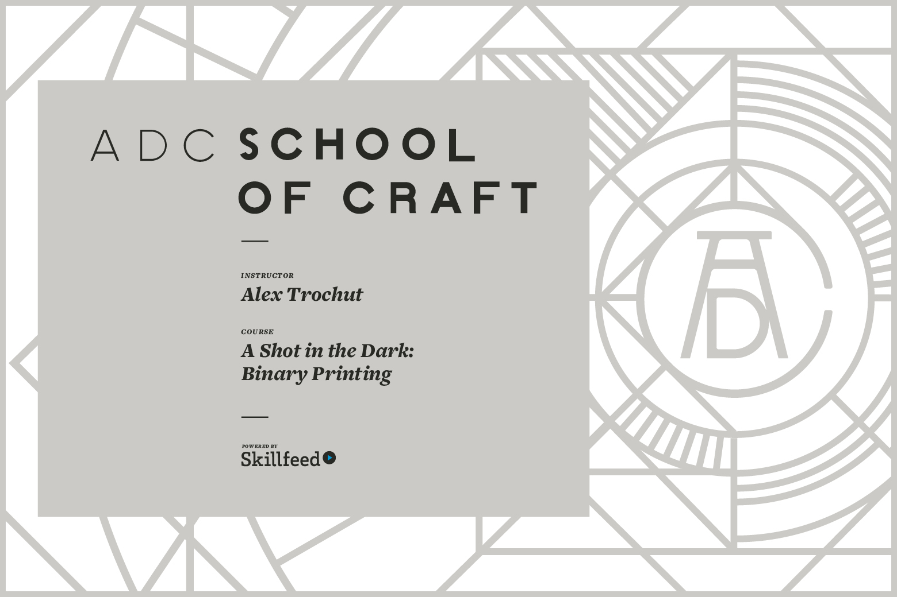
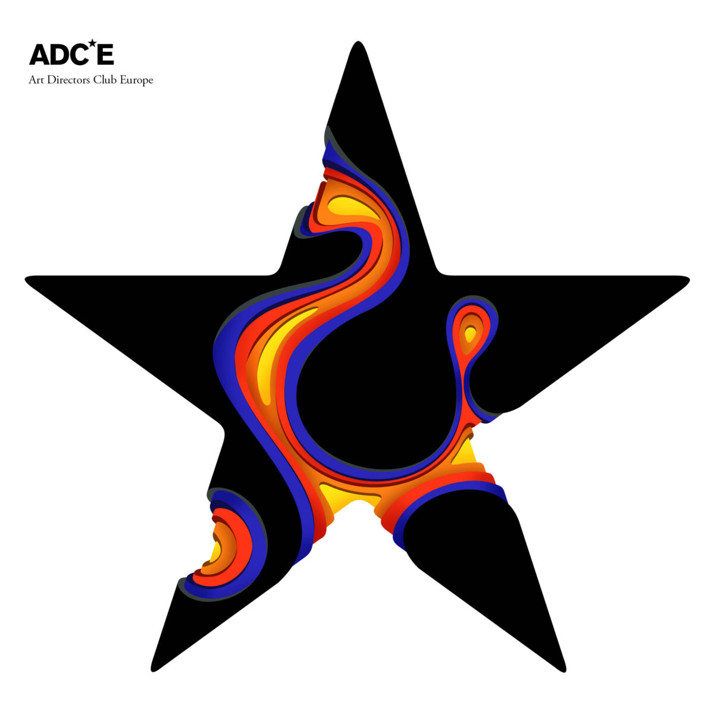

Biography

Alex Trochut was born in 1981 in Barcelona, Spain. After completing his studies at Elisava Escola
Superior de Disseny, Alex established his own design studio in Barcelona before relocating to
New York City. Through his design, illustration and typographic practice he has developed an
intuitive way of working that has resulted in his expressive visual style.
For Alex, typography functions on two hierarchical levels. First, there is the image of the word
we see; reading comes secondary. As a designer, Alex focuses on the potential of language as a
visual medium, pushing language to its limits so that seeing and reading become the same action
and text and image become one unified expression.
Mixing styles and genres and drawing equally from pop culture, street culture, fashion and
music, Alex has created design, illustration and typography for a diverse range of clients:
Nike, Adidas, The Rolling Stones, Katy Perry, BBC, Coca-Cola, Pepsi, The Guardian, The New York
Times, Time Magazine and many others. Alex’s work has been internationally recognized, appearing
in in exhibitions and publications worldwide. He has given talks and been honored by the Art
Directors Club––including being named a 2008 Young Gun––the Type Directors Club, Creative
Review, Cannes, Clio and D&AD among others. His monograph, More Is More, explores his working
methodologies and influences and was published in 2011.
Alex currently lives and works in Brooklyn.
Clients

Alex has worked across disciplines to bring to life design solutions tailored to meet the
concerns of each client. Alex works collaboratively with a range of clients traversing music,
fashion, editorial, and beyond: from developing a visual language for bands like The Rolling
Stones, Arcade Fire and Vampire Weekend to expressively communicating a new product or direction
for companies like Coca-Cola, Nike and British Airways to developing engaging editorial for
publications like The New York Times, The Guardian and Esquire UK. With every new project, Alex
fuses his aesthetic sensibility with a prescient cultural understanding to create distinctive
designs, illustrations and typography.
Music
The Rolling Stones, Katy
Perry, Caribou, Phish, James Murphy, Four Tet, Arctic Monkeys, Arcade Fire, Wiz Khalifa, Vampire
Weekend, Sufjan Stevens, Manel, Damian Lazarus, Acid Pauli, Lucy, Rebolledo, Ellen Alien,
Moderat, Alagoas, Kaitlyn Aurelia Smith, Noia,
Joywave,…
Editorial
Penguin Classics, New York Times, The Guardian,
Vanity Fair, V magazine, Wired, Washington Post, Etapes, Creative Review, Esquire, ESPN,
GQ…
Advertising
Coca Cola, Nike, Apple Music, The Oscars, IBM, Johnnie
Walker, McDonalds, Volkswagen, Toyota, Fiat, Seat, Audi, Adobe, Adidas, MTV, Pepsi, British
Airways, Converse, Chivas, Absolut, The Economist, Fallon, BBH, Saatchi & Saatchi, Mother, JWT,
TBWA, W+K, ING, Footlocker, MasterCard, Lays, Taco Bell,…
Fashion
M·A·C,
Camper, Patagonia, 55DSL, Nixon, Sixpack, Top Shop, Ecko Enterprises, Lane Crawford, Puig
Group,…
Awards
Alex has been honored for his work in design and typography by industry pioneers like The Type
Directors Club, Communication Arts and Graphis. In 2008, he was recognized for his inventive
lettering style and was named an Art Directors Club Young Gun, honoring designers under 30. In
2014, Binary prints was celebrated by the Creative Review with the coveted Best In
Book Award in recognition of the inventive printing technique used to create day and night
prints on a single page.
Cannes Lions 2018
Industry Craft / Outdoor
(x6) Bronze
Cannes Lions 2018
Industry Craft / Brand and Communication
Design (x1) Bronze
D&AD PRofessional Awards 2018
Wood Pencil Crafts for
Design / Typography for Design 2018
D&AD PRofessional Awards 2017
Wood
Pencil Trade Covers 2017
ADC Awards 2017
Bronze
Cube
TDC Certificate of Excellence 2017
Book Jacket
58th
Grammy Awards Nomination
Best Recording Packaging
Communication Arts
2016 Award of Excellence
Typography Packaging
Communication Arts 2016
Award of Excellence
Unpublished
CLIO Silver 2015
Print
Technique Illustration
CLIO Bronze 2015
Print Technique Art
Direction
Kinsale Silver 2015
Print Campaign
Kinsale Bronze
2015
Poster
Bronze Cannes Lion 2015
Press
Campaign
Creative Review Annual
Best in Book 2013
Premio
Gráffica
2013
Laus
Bronce 2013
Laus
Or 2008
Illustrative
Berlin
Nomination 2009
D&AD
in Book Award
2009
Certificate of Excellence
TDC 56 2009
Communication
Arts Illustration
2008
ADC Young
Gun
2008
Graphic Poster
Gold 2008
Certificate
of Excellence
TDC 2005